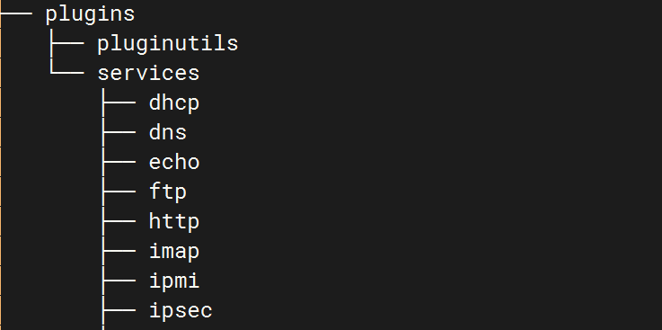

fingerprintx 源码学习
- date
- 2024-02-20 12:08:51
项目介绍
项目地址：https://github.com/praetorian-inc/fingerprintx
fingerprintx 是一款端口识别工具，支持协议如下：
|
|
|
|
| SERVICE |
TRANSPORT |
SERVICE |
TRANSPORT |
| HTTP |
TCP |
REDIS |
TCP |
| SSH |
TCP |
MQTT3 |
TCP |
| MODBUS |
TCP |
VNC |
TCP |
| TELNET |
TCP |
MQTT5 |
TCP |
| FTP |
TCP |
RSYNC |
TCP |
| SMB |
TCP |
RPC |
TCP |
| DNS |
TCP |
OracleDB |
TCP |
| SMTP |
TCP |
RTSP |
TCP |
| PostgreSQL |
TCP |
MQTT5 |
TCP (TLS) |
| RDP |
TCP |
HTTPS |
TCP (TLS) |
| POP3 |
TCP |
SMTPS |
TCP (TLS) |
| KAFKA |
TCP |
MQTT3 |
TCP (TLS) |
| MySQL |
TCP |
RDP |
TCP (TLS) |
| MSSQL |
TCP |
POP3S |
TCP (TLS) |
| LDAP |
TCP |
LDAPS |
TCP (TLS) |
| IMAP |
TCP |
IMAPS |
TCP (TLS) |
| SNMP |
UDP |
Kafka |
TCP (TLS) |
| OPENVPN |
UDP |
NETBIOS-NS |
UDP |
| IPSEC |
UDP |
DHCP |
UDP |
| STUN |
UDP |
NTP |
UDP |
| DNS |
UDP |
|
|
项目结构
| pkg
├── plugins
│ │ ├── plugins.go # 插件注册相关
│ │ ├── pluginutils
│ │ │ ├── error.go
│ │ │ └── requests.go # 向 conn 中写入数据 读取数据
│ │ ├── services # 各种服务的识别插件、都实现了插件接口
│ │ └── types.go # 插件接口、各种服务的详细数据结构体（ 实现 Metadata 接口 ）
│ ├── runner
│ │ ├── report.go # 输出格式 JSON CSV
│ │ ├── root.go # cobra cli 参数解析 程序入口
│ │ ├── target.go # 解析命令行参数的目标为 plugins.Target
│ │ ├── types.go # cliConfig 结构体 参数相关
│ │ └── utils.go # 一些工具类
│ ├── scan
│ │ ├── plugin_list.go # import 导入所有插件包 ( 插件注册 )
│ │ ├── scan_api.go # API 可以直接调用 ScanTargets 完成指纹识别
│ │ ├── simple_scan.go # 具体的识别逻辑
│ │ └── types.go # config 结构体
|
源码学习
fingerprintx 的端口指纹识别是以插件的形式完成的，感觉很整齐，这种类型的项目看起来也很舒服：

这些识别插件都实现了插件接口：
| type Plugin interface {
Run(net.Conn, time.Duration, Target) (*Service, error) // 识别的主逻辑
PortPriority(uint16) bool // 端口优先权
Name() string // 名称
Type() Protocol // 协议
Priority() int // 优先级端口
}
|
这里的 PortPriority 表示的是端口优先权，比如 80 对应的是 http 服务，那么 http 识别插件的 PortPriority(80) 就会返回 true。
Priority 是端口优先级，如果优先权未识别出端口，那就会按照服务的优先级进行指纹识别。
很好的思路，而且这种思路使用了这样的写法，很整齐，之前的 go-Portscan 虽然也是这种思路，但是写法和 fingerprintx 比起来就有点乱。
先看一个指纹识别插件，这是 HTTP 包下面的，它实现了 HTTP 和 HTTPS 这里只留 HTTP 的写一下：
| type HTTPPlugin struct {
analyzer *wappalyzer.Wappalyze
}
const HTTP = "http"
func init() {
wappalyzerClient, err := wappalyzer.New()
if err != nil {
panic("unable to initialize wappalyzer library")
}
// 注册 http 插件
plugins.RegisterPlugin(&HTTPPlugin{analyzer: wappalyzerClient})
}
// http 对应可能的端口 => 端口优先权
var (
commonHTTPPorts = map[int]struct{}{
80: {},
3000: {},
4567: {},
5000: {},
8000: {},
8001: {},
8080: {},
8081: {},
8888: {},
9001: {},
9080: {},
9090: {},
9100: {},
}
)
// 优先权判断
func (p *HTTPPlugin) PortPriority(port uint16) bool {
_, ok := commonHTTPPorts[int(port)]
return ok
}
// 指纹识别的主函数
func (p *HTTPPlugin) Run(conn net.Conn, timeout time.Duration, target plugins.Target) (*plugins.Service, error) {
// 对于 HTTP 协议的识别 直接发送 HTTP 请求
req, err := http.NewRequest("GET", fmt.Sprintf("http://%s", conn.RemoteAddr().String()), nil)
if err != nil {
if errors.Is(err, syscall.ECONNREFUSED) {
return nil, nil
}
return nil, &utils.RequestError{Message: err.Error()}
}
if target.Host != "" {
req.Host = target.Host
}
// http client with custom dialier to use the provided net.Conn
client := http.Client{
Timeout: timeout,
Transport: &http.Transport{
DialContext: func(ctx context.Context, network, addr string) (net.Conn, error) {
return conn, nil
},
},
CheckRedirect: func(req *http.Request, via []*http.Request) error {
return http.ErrUseLastResponse
},
}
resp, err := client.Do(req)
if err != nil {
return nil, &utils.RequestError{Message: err.Error()}
}
defer resp.Body.Close()
// 进行 WEB 指纹识别 wappalyzergo
technologies, _ := p.FingerprintResponse(resp)
payload := plugins.ServiceHTTP{
Status: resp.Status,
StatusCode: resp.StatusCode,
ResponseHeaders: resp.Header,
}
if len(technologies) > 0 {
payload.Technologies = technologies
}
// 使用 CreateServiceFrom 生成一个结果 fingerprintx 这个地方也很好
return plugins.CreateServiceFrom(target, payload, false, resp.Header.Get("Server"), plugins.TCP), nil
}
// TCP 类型的
func (p *HTTPPlugin) Type() plugins.Protocol {
return plugins.TCP
}
// 优先级第一
func (p *HTTPPlugin) Priority() int {
return 0
}
func (p *HTTPPlugin) Name() string {
return HTTP
}
func (p *HTTPPlugin) FingerprintResponse(resp *http.Response) ([]string, error) {
return fingerprint(resp, p.analyzer)
}
// 调用 wappalyzerClient 进行指纹识别
func fingerprint(resp *http.Response, analyzer *wappalyzer.Wappalyze) ([]string, error) {
var technologies []string
data, err := ioutil.ReadAll(resp.Body)
if err != nil {
return nil, err
}
fingerprint := analyzer.Fingerprint(resp.Header, data)
for tech := range fingerprint {
technologies = append(technologies, tech)
}
return technologies, nil
}
|
指纹识别和之前的 go-Portscan 略有不同，go-Portscan 是统一的，只分了协议、发送动作、接收判断规则。而 fingerprintx 则是对每种协议都做了处理，而且还会获取其详细信息，比如这里的 http 就会进行指纹识别。
再说一下 plugins.CreateServiceFrom 函数，上面说了他对很多规则都做了详细信息的获取函数，但是这些信息的结构是不同的，比如 HTTP 这里就是 plugins.ServiceHTTP 结构，看看 fingerprintx 是如果去处理：
| func CreateServiceFrom(target Target, m Metadata, tls bool, version string, transport Protocol) *Service {
service := Service{}
// 将指纹数据直接转换成 json plugins.ServiceHTTP 实现了 Metadata 接口
b, _ := json.Marshal(m)
service.Host = target.Host
service.IP = target.Address.Addr().String()
service.Port = int(target.Address.Port())
service.Protocol = m.Type()
service.Transport = strings.ToLower(transport.String())
service.Raw = json.RawMessage(b)
if version != "" {
service.Version = version
}
service.TLS = tls
return &service
}
|
Metadata 接口只有一个 Type 方法：
| type Metadata interface {
Type() string
}
|
HTTP 的就是这个了：
| type ServiceHTTP struct {
Status string `json:"status"` // e.g. "200 OK"
StatusCode int `json:"statusCode"` // e.g. 200
ResponseHeaders http.Header `json:"responseHeaders"`
Technologies []string `json:"technologies,omitempty"`
}
|
再后面输出的时候，都直接调用的是 Service 接口的 Metadata 方法，其按照不同的数据格式进行对应的 json 序列化，这样就解决了输出 json 格式的问题：
| func (e Service) Metadata() Metadata {
switch e.Protocol {
case ProtoFTP:
var p ServiceFTP
_ = json.Unmarshal(e.Raw, &p)
return p
case ProtoPostgreSQL:
var p ServicePostgreSQL
_ = json.Unmarshal(e.Raw, &p)
return p
// ......
default:
var p ServiceUnknown
_ = json.Unmarshal(e.Raw, &p)
return p
}
}
|
然后再看看它具体的识别逻辑 simple_scan.go ，写的很清晰：
| func init() {
// 插件初始化
setupPlugins()
// TLS 的一些东西
cipherSuites := make([]uint16, 0)
for _, suite := range tls.CipherSuites() {
cipherSuites = append(cipherSuites, suite.ID)
}
for _, suite := range tls.InsecureCipherSuites() {
cipherSuites = append(cipherSuites, suite.ID)
}
tlsConfig.InsecureSkipVerify = true //nolint:gosec
tlsConfig.CipherSuites = cipherSuites
tlsConfig.MinVersion = tls.VersionTLS10
}
|
setupPlugins 这就是把 plugin_list.go 中 import 导入注册的插件进行分类、排序：
| func setupPlugins() {
if len(sortedTCPPlugins) > 0 {
return
}
// 对插件进行分类 TCP、TCPLSP、UDP
sortedTCPPlugins = append(sortedTCPPlugins, plugins.Plugins[plugins.TCP]...)
sortedTCPTLSPlugins = append(sortedTCPTLSPlugins, plugins.Plugins[plugins.TCPTLS]...)
sortedUDPPlugins = append(sortedUDPPlugins, plugins.Plugins[plugins.UDP]...)
// 将插件按照优先级进行排序
sort.Slice(sortedTCPPlugins, func(i, j int) bool {
return sortedTCPPlugins[i].Priority() < sortedTCPPlugins[j].Priority()
})
sort.Slice(sortedUDPPlugins, func(i, j int) bool {
return sortedUDPPlugins[i].Priority() < sortedUDPPlugins[j].Priority()
})
sort.Slice(sortedTCPTLSPlugins, func(i, j int) bool {
return sortedTCPTLSPlugins[i].Priority() < sortedTCPTLSPlugins[j].Priority()
})
}
|
然后是识别的具体流程，很清晰，先遍历一圈，识别默认服务，然后再按照优先级进行指纹识别：
| func (c *Config) SimpleScanTarget(target plugins.Target) (*plugins.Service, error) {
ip := target.Address.Addr().String()
port := target.Address.Port()
for _, plugin := range sortedTCPPlugins {
// 查看该端口对应的服务是否存在 存在的化就扫描这个服务 ( 端口优先权 )
if plugin.PortPriority(port) {
// TCP 连接
conn, err := DialTCP(ip, port)
if err != nil {
return nil, fmt.Errorf("unable to connect, err = %w", err)
}
// 使用 simplePluginRunner 进行识别
result, err := simplePluginRunner(conn, target, c, plugin)
if err != nil && c.Verbose {
log.Printf("error: %v scanning %v\n", err, target.Address.String())
}
if result != nil && err == nil {
return result, nil
}
}
}
// TCP TLS 类型的....
// 快速模式 也就是只检查默认端口
if c.FastMode {
return nil, nil
}
if isTLS {
// ...
} else {
// 按照优先级遍历所有插件进行指纹识别 这里感觉可以去掉上面的默认服务的识别 可以简单增加一个判断
for _, plugin := range sortedTCPPlugins {
conn, err := DialTCP(ip, port)
if err != nil {
return nil, fmt.Errorf("unable to connect, err = %w", err)
}
result, err := simplePluginRunner(conn, target, c, plugin)
if err != nil && c.Verbose {
log.Printf("error: %v scanning %v\n", err, target.Address.String())
}
if result != nil && err == nil {
// identified plugin match
return result, nil
}
}
}
return nil, nil
}
|
这里是遍历了 2 次，第一次是获取默认服务，第二次是去按照优先级全部扫一遍。这里感觉有些麻烦，可以向 go-Portscan 那样维护一个端口和默认服务的 map，这里就维护一个端口和插件的 map ，就不需要一直遍历获取默认服务插件了。
之后就是 simplePluginRunner 了，它其实就是调用插件的 Run 方法去识别：
| func simplePluginRunner(
conn net.Conn,
target plugins.Target,
config *Config,
plugin plugins.Plugin,
) (*plugins.Service, error) {
if config.Verbose {
log.Printf("%v %v-> scanning %v\n",
target.Address.String(),
target.Host,
plugins.CreatePluginID(plugin),
)
}
result, err := plugin.Run(conn, config.DefaultTimeout, target)
if config.Verbose {
log.Printf(
"%v %v-> completed %v\n",
target.Address.String(),
target.Host,
plugins.CreatePluginID(plugin),
)
}
return result, err
}
|
学习总结
- fingerprintx 接口 插件，然后通过 import 导包去实现插件注册挺不错的
{kind=link}